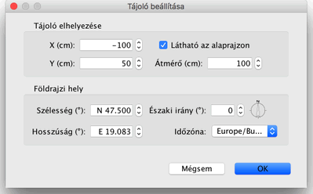

| Tájoló és földrajzi hely beállítása< | |||
Minden új otthon alaprajzának bal felsõ sarkában megjelenik a tájoló. Csakúgy, mint minden más objektum, ez is mozgaható egérrel, vagy kijelölés után a kurzornyilakkal. Ha az alaprajzon csak a tájolót jelöli ki, átméretezheti, vagy megváltoztathatja az északi irányt a tájoló indikátoraival.
|

|
Ha az egérmutatót az indikátorok fölé húzza, az megváltozik, eképp jelezve, hogy e pontokat elhúzhatja az egérrel. A tájoló és az otthon földrajzi helyzete módosítható a beállításpanel megjelenítsével is, ha a tájolóra duplán kattint, vagy az Alaprajz > Tájoló beállítása... menüopnt választásával.  A tájoló tulajdonságlapon megváltoztathatja a tájoló elhelyezését, átmérõjét, az északi irányt, valamint, hogy a tájoló megjelenjen-e az alaprajzon. Beállíthatja továbbá az otthon földrajzi koordonátáit és a régióhoz tartozó idõzónát. |
|